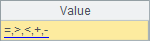
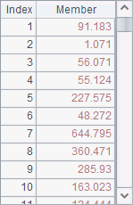
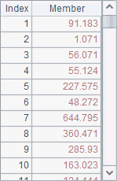
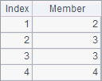
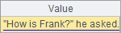
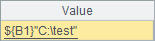

5.4.1 Special characters in strings
A string may include various signs, some of which could be problematic. The following are the possible problems when using certain signs in constant strings. For example:
|
|
A |
B |
C |
|
1 |
=,>,<,+,- |
===== dividing line ===== |
>100 |
|
2 |
/ is division sign |
34.55 |
end |
Strings in A1 and B1 beginning with "=" will be interpreted as wrong expressions instead of constants if they are entered directly in cells, and will cause errors in computation. The string in C1 beginning with ">" won¡¯t be handled as what it is; instead the cell will be regarded as an executable cell. The string beginning with "/" in A2 will be treated as a comment statement when written directly in the cell. The constant in B2 will be parsed automatically into an integer instead of a string. Being a reserved word, the string in C2 also won¡¯t be handled as a string constant. Among these cells, only B2 has a value; but the value is not of string type.

The above problems that string constants cannot be identified correctly are caused by two factors. In most cases the string itself is ambiguous, in other cases the string¡¯s first character is a special one, such as "=", ">", "/" and etc. In esProc, you just need to add a single quotation mark (¡¯) before the string constant to make it recognized normally.
|
|
A |
B |
C |
|
1 |
'=,>,<,+,- |
'===== dividing line ===== |
'>100 |
|
2 |
'/ is division sign |
'34.55 |
'end |
Values of A1, B1 and C1 are shown below. The single quotation mark at the front serves only as the mark of a string constant cell, but it won¡¯t appear in the value:
 

Below are values of A2, B2 and C2. Data in B2 is left-aligned, showing it is of string type:
 
Since a string used in an expression should be surrounded by double quotation marks (like "¡"), the above problematic strings won¡¯t cause ambiguity when used in expressions. But for a string containing the double quotation mark " in it, you need to put an escape character \ before " to interpret it literally; the same with the slash \ used in a string. For example:
|
|
A |
B |
C |
|
1 |
="===== dividing line =====" |
="/ is division sign" |
="34.55" |
|
2 |
="\"How is Frank?\" he asked." |
=$[$\{B1}"C:\\test"] |
=$[${B1}"C:\\test"] |
In the cellset, A1, B1 and C1 enclose the special strings mentioned in the above with double quotation marks to remove ambiguity and parse them as string-type data. Here¡¯re their values:
The string in A2 includes double quotation marks, each of which should be preceded by an escape character. An escape character also needs to be escaped with a slash \. Here¡¯s A2¡¯s value:

B2 uses the format of $[¡], instead of the double quotation marks, to represent a string. In this case, the double quotation marks won¡¯t cause ambiguity and escape characters are not necessary; but an escape character is still needed for the slash \. Note that here is another problem about the string constants: As a macro in the format of ${¡}is allowed in a string constant, an escape character should be added to distinguish the string from a macro when the latter is not wanted. You can see this more clearly by comparing values of B2 and C2:
 
In C2¡¯s expression, ${B1} is a macro that introduces B1¡¯s value to the string.